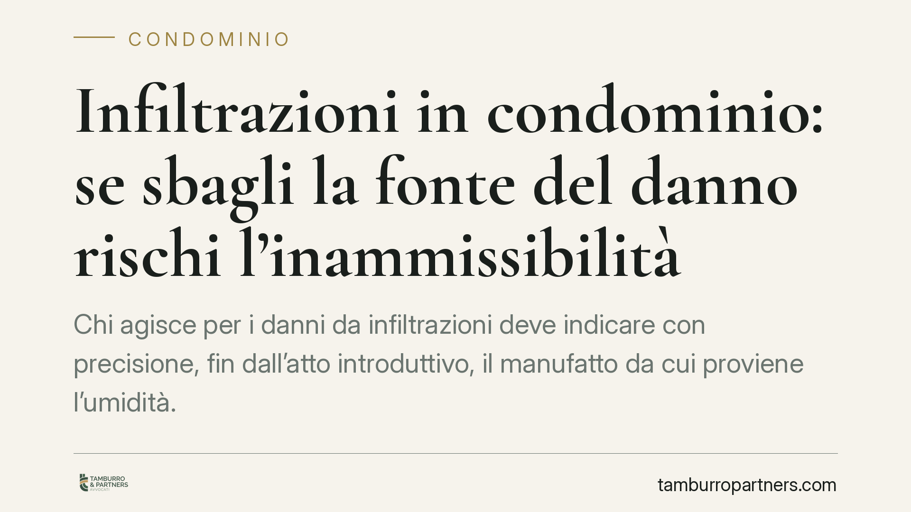

Infiltrazioni in condominio: se sbagli la fonte del danno rischi l'inammissibilità
Chi agisce per i danni da infiltrazioni deve indicare con precisione, fin dall'atto introduttivo, il manufatto da cui proviene l'umidità. Secondo una recente pronuncia della Cassazione, cambiare in appello l'origine del danno equivale a proporre una domanda nuova, inammissibile. Un profilo che incide sull'esito della causa più della fondatezza della pretesa. Vediamo perché e come muoversi.

Il caso
Un condomino agisce contro il vicino, ritenuto custode del bene da cui proviene l'infiltrazione, chiedendo il risarcimento dei danni ai propri locali. In corso di causa emerge però che l'origine dell'umidità è diversa da quella indicata nell'atto di citazione. Il danneggiato prova allora a spostare l'accusa su un altro manufatto in sede di appello. La Corte di legittimità ha ritenuto la mossa inammissibile.
> Nota redazionale. Gli estremi della pronuncia citata dalla fonte (ord. n. 15237/2026, Cass. civ. Sez. III) risultano allo stato non verificabili e la datazione al 2026 appare temporalmente incongrua. Il riferimento è da confermare negli estremi esatti (numero, anno e sezione) prima di ogni utilizzo processuale. Il principio di diritto illustrato è comunque conforme all'orientamento consolidato in materia di causa petendi.
Inquadramento normativo
La responsabilità del custode per i danni da cosa in custodia è disciplinata dall'art. 2051 c.c. Non si tratta di una responsabilità "oggettiva" in senso proprio, ma di una responsabilità aggravata fondata sulla relazione di custodia con la cosa. Il regime probatorio è ripartito: il danneggiato deve provare il nesso causale tra la cosa e il danno, mentre il custode può liberarsi soltanto dimostrando il caso fortuito, cioè un fattore esterno, imprevedibile e non evitabile, che interrompe quel nesso.
Da qui l'importanza dell'individuazione del manufatto. La *causa petendi* — cioè il fatto costitutivo posto a fondamento della domanda — non è un dettaglio: indicare la terrazza anziché la tubazione condominiale, o il lastrico solare anziché l'impianto del vicino, significa fondare la pretesa su un fatto diverso.
Mutatio ed emendatio libelli
Il punto tecnico è la distinzione tra *emendatio libelli* (ammessa) e *mutatio libelli* (vietata). Le Sezioni Unite (Cass. S.U. n. 12310/2015) hanno chiarito che si ha mera *emendatio* quando si precisa o modifica la domanda già introdotta senza alterare i fatti costitutivi; si ha invece *mutatio* — inammissibile — quando si introduce un fatto nuovo che muta l'oggetto sostanziale della pretesa o i suoi presupposti.
Spostare l'origine del danno da un manufatto a un altro incide proprio sui fatti costitutivi: cambia il bene, cambia il custode potenzialmente responsabile, cambia l'accertamento tecnico necessario. Per questo la modifica in appello configura una domanda nuova e non una semplice precisazione.
Implicazioni pratiche
Per il condomino danneggiato, il messaggio è netto: la correttezza dell'individuazione della fonte pesa quanto la fondatezza del danno. Un'infiltrazione reale e documentata può non essere risarcita se imputata al manufatto sbagliato e se l'errore viene corretto oltre i termini di preclusione.
Per il vicino o il condominio indicato come custode, la difesa può fondarsi anche sulla contestazione dell'origine del danno: se il danneggiato ha sbagliato bersaglio, la contestazione tempestiva del nesso causale diventa un argomento decisivo.
È qui che assume rilievo l'accertamento tecnico. Prima di agire, il ricorso all'ATP ex art. 696-bis c.p.c. — l'accertamento tecnico preventivo con finalità conciliative — o comunque a una consulenza tecnica consente di identificare con certezza il punto di provenienza dell'umidità. Un dato che, cristallizzato all'inizio, riduce il rischio di impostare la domanda su una premessa errata.
Cosa fare in concreto
- Accerta l'origine prima di agire. Ricorri a un tecnico o a un ATP ex art. 696-bis c.p.c. per individuare con precisione il manufatto da cui proviene l'infiltrazione, prima di depositare l'atto introduttivo.
- Indica la fonte con esattezza nell'atto. Descrivi il bene, la sua ubicazione e il soggetto che ne ha la custodia: sono questi i fatti costitutivi della domanda.
- Distingui precisazione e domanda nuova. In corso di causa puoi precisare la domanda già proposta, ma non spostarne il fondamento su un manufatto diverso oltre i termini di preclusione. Valuta con l'avvocato il confine tra emendatio e mutatio.
- Conserva la documentazione. Fotografie datate, verbali assembleari, relazioni tecniche e corrispondenza servono a fissare il quadro probatorio fin dall'origine.
- Se sei il custode, contesta tempestivamente il nesso. La corretta o errata individuazione della fonte è un profilo difensivo da sollevare subito.
Consigliamo di trattare l'individuazione della fonte del danno come una scelta strategica preliminare, non come un dato da definire in corso di causa.
---
Contributo informativo a cura di Tamburro & Partners Avvocati. Non costituisce parere legale.
Ogni condominio ha una storia a sé.
Se gestisci un'amministrazione e vuoi un confronto su una specifica questione condominiale, scrivi allo studio. Ti rispondiamo entro un giorno lavorativo.